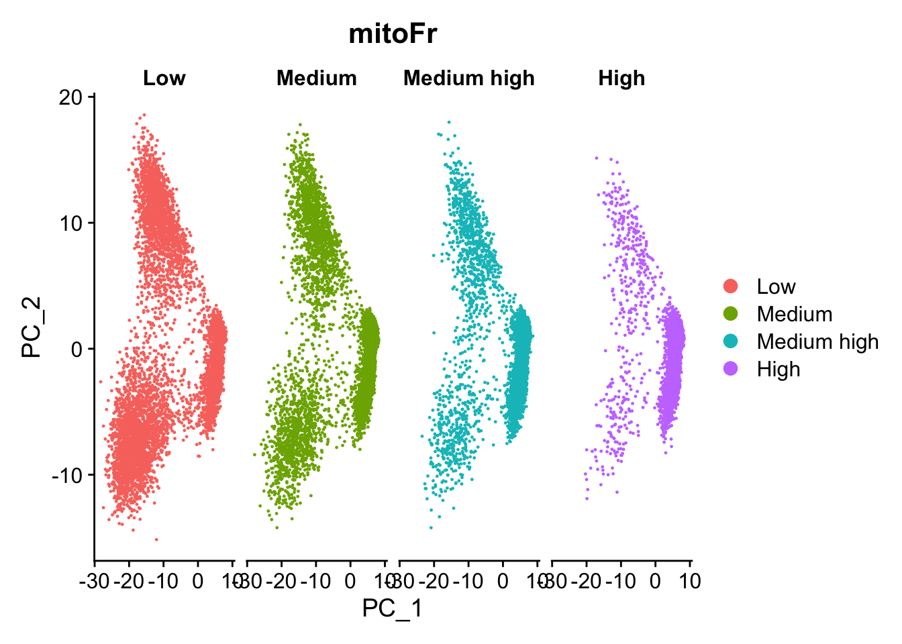

Normalization and exploring data for unwanted variation - Answer Key
Author
Will Gammerdinger
Published
July 1, 2025
Exercise 1
Mitochondrial expression is another factor which can greatly influence clustering. Oftentimes, it is useful to regress out variation due to mitochondrial expression. However, if the differences in mitochondrial gene expression represent a biological phenomenon that may help to distinguish cell clusters, then we advise not regressing this out. In this exercise, we can perform a quick check similar to looking at cell cycle and decide whether or not we want to regress it out.
First, turn the mitochondrial ratio variable into a new categorical variable based on quartiles (using the code below):
Min. 1st Qu. Median Mean 3rd Qu. Max.
0.00000 0.01438 0.01993 0.02139 0.02669 0.14464
# Turn mitoRatio into categorical factor vector based on quartile valuesseurat_phase@meta.data$mitoFr <-cut(seurat_phase@meta.data$mitoRatio, breaks=c(-Inf, 0.0144, 0.0199, 0.0267, Inf), labels=c("Low","Medium","Medium high", "High"))
Next, plot the PCA similar to how we did with cell cycle regression. Hint: use the new mitoFrvariable to split cells and color them accordingly.
# Plot the PCA colored by mitoFrDimPlot(seurat_phase,reduction ="pca",group.by="mitoFr",split.by ="mitoFr")

Evaluate the PCA plot generated above
Determine whether or not you observe an effect.
Yes, there is an effect.
Describe what you see.
Based on this plot, we can see that there is a different pattern of scatter for the plot containing cells with “High” mitochondrial expression. We observe that the lobe of cells on the left-hand side of the plot is where most of the cells with high mitochondrial expression are. For all other levels of mitochondrial expression we see a more even distribution of cells across the PCA plot.
Would you regress out mitochondrial fraction as a source of unwanted variation?
Since we see this clear difference, we will regress out the ‘mitoRatio’ when we identify the most variant genes.
Are the same assays available for the “stim” samples within the split_seurat object? What is the code you used to check that?
Yes they are available. The code use is:
split_seurat$stim@assays
$RNA
Assay (v5) data with 14065 features for 14782 cells
Top 10 variable features:
HBB, HBA2, CCL4L2, HBA1, IGKC, CCL7, PPBP, CCL4, CCL3, CCL8
Layers:
counts, data, scale.data
$SCT
SCTAssay data with 13695 features for 14782 cells, and 1 SCTModel(s)
Top 10 variable features:
IGKC, FTL, CCL8, CCL2, GNLY, CXCL10, CCL7, IGLC2, CCL4, CCL3
Any observations for the genes or features listed under “First 10 features:” and the “Top 10 variable features:” for “ctrl” versus “stim”?
For the first 10 features, it appears that the same genes are present in both “ctrl” and “stim”
For the top 10 variable features, these are different in the the 2 conditions with some overlap between them.
Source Code
---title: "Normalization and exploring data for unwanted variation - Answer Key"author: "Will Gammerdinger"date: "Tuesday, July 1, 2025"---```{r}#| label: load_libraries#| echo: falselibrary(Seurat)library(tidyverse)library(RCurl)library(cowplot)load("data/seurat_filtered.RData")seurat_phase <-NormalizeData(filtered_seurat)load("data/cycle.rda")seurat_phase <-CellCycleScoring(seurat_phase, g2m.features = g2m_genes, s.features = s_genes)seurat_phase <-FindVariableFeatures(seurat_phase, selection.method ="vst",nfeatures =2000, verbose =FALSE)seurat_phase <-ScaleData(seurat_phase)ranked_variable_genes <-VariableFeatures(seurat_phase)top_genes <- ranked_variable_genes[1:15]p <-VariableFeaturePlot(seurat_phase)seurat_phase <-RunPCA(seurat_phase)```# Exercise 1Mitochondrial expression is another factor which can greatly influence clustering. Oftentimes, it is useful to regress out variation due to mitochondrial expression. However, if the differences in mitochondrial gene expression represent a biological phenomenon that may help to distinguish cell clusters, then we advise not regressing this out. In this exercise, we can perform a quick check similar to looking at cell cycle and decide whether or not we want to regress it out.First, turn the mitochondrial ratio variable into a new categorical variable based on quartiles (using the code below):```{r}#| label: mito_ratio_wrangling# Check quartile valuessummary(seurat_phase@meta.data$mitoRatio)# Turn mitoRatio into categorical factor vector based on quartile valuesseurat_phase@meta.data$mitoFr <-cut(seurat_phase@meta.data$mitoRatio, breaks=c(-Inf, 0.0144, 0.0199, 0.0267, Inf), labels=c("Low","Medium","Medium high", "High"))```1. Next, plot the PCA similar to how we did with cell cycle regression. *Hint: use the new `mitoFr`variable to split cells and color them accordingly.*```{r}#| label: plot_pca# Plot the PCA colored by mitoFrDimPlot(seurat_phase,reduction ="pca",group.by="mitoFr",split.by ="mitoFr")```2. Evaluate the PCA plot generated above * Determine whether or not you observe an effect. Yes, there is an effect. * Describe what you see. Based on this plot, we can see that there is a different pattern of scatter for the plot containing cells with "High" mitochondrial expression. We observe that the lobe of cells on the left-hand side of the plot is where most of the cells with high mitochondrial expression are. For all other levels of mitochondrial expression we see a more even distribution of cells across the PCA plot. * Would you regress out mitochondrial fraction as a source of unwanted variation? Since we see this clear difference, we will regress out the 'mitoRatio' when we identify the most variant genes.# Exercise 2```{r}split_seurat <-SplitObject(seurat_phase, split.by ="sample")options(future.globals.maxSize =4000*1024^2)for (i in1:length(split_seurat)) { split_seurat[[i]] <-SCTransform(split_seurat[[i]], vars.to.regress =c("mitoRatio"),vst.flavor ="v2") }```1. Are the same assays available for the "stim" samples within the `split_seurat` object? What is the code you used to check that?Yes they are available. The code use is:```{r}#| label: check_assayssplit_seurat$stim@assays```2. Any observations for the genes or features listed under "First 10 features:" and the "Top 10 variable features:" for "ctrl" versus "stim"?For the first 10 features, it appears that the same genes are present in both "ctrl" and "stim"For the top 10 variable features, these are different in the the 2 conditions with some overlap between them.